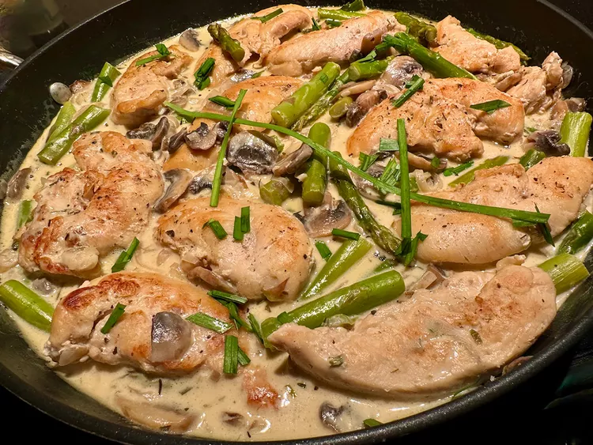

Poêlée de poulet, champignons et asperges au Boursin
Description
Pour cette poêlée de poulet, champignons et asperges au Boursin, les échalotes, l'ail, les champignons et les asperges contribuent à donner du goût aux filets de poulet, et le Boursin complète la délicieuse sauce. Servez sur de la purée de pommes de terre ou du riz et ajoutez une salade mélangée pour un menu complet.
Ingrédients
- 1 1/2 à 2 livres de filets de poulet
- sel et poivre noir fraîchement moulu au goût
- 1 1/2 cuillères à soupe de beurre non salé
- 1 1/2 cuillère à soupe d'huile d'olive
- 1/2 tasse d'échalotes finement tranchées
- 8 onces de champignons , nettoyés et tranchés
- 2 gousses d'ail , hachées
- 1 cuillère à café d' herbes de Provence
- 1/3 tasse de bouillon de poulet
- 1/3 tasse de vin blanc sec
- 2 tasses de morceaux d'asperges de la taille d'une bouchée
- 1 paquet (5,2 onces) de fromage français à pâte molle, comme le fromage Boursin® Échalote et ciboulette, haché grossièrement
- ciboulette fraîche ciselée pour la garniture (facultatif)
Instructions
- Séchez les lanières de poulet avec du papier absorbant et assaisonnez tous les côtés avec du sel et du poivre.
- Faites fondre le beurre avec l'huile d'olive dans une grande poêle antiadhésive à feu moyen. Lorsque le beurre grésille, ajoutez les lanières de poulet et faites-les cuire jusqu'à ce qu'elles soient dorées, 2 à 3 minutes de chaque côté. Retirez-les dans une assiette et gardez-les au chaud.
- Ajoutez les échalotes dans la même poêle et remuez pendant environ 30 secondes, puis ajoutez les champignons. Remuez jusqu'à ce que les champignons commencent à ramollir, environ 2 minutes. Ajoutez l'ail et les herbes de Provence et faites cuire en remuant pendant environ 30 secondes.
- Ajoutez le bouillon de poulet et le vin. Ajoutez les asperges et une autre pincée de sel.
- Placez les filets de poulet sur les légumes et ajoutez le jus accumulé. Réduisez le feu à moyen-doux, couvrez et laissez cuire jusqu'à ce que le poulet ne soit plus rose au centre et que le jus soit clair, environ 5 minutes. Un thermomètre à lecture instantanée, inséré près du centre, devrait atteindre 165 degrés F (74 degrés C).
- Éteignez le feu, ajoutez le Boursin et remuez jusqu'à ce qu'il soit fondu. Garnissez de ciboulette, si vous le souhaitez, et servez chaud.